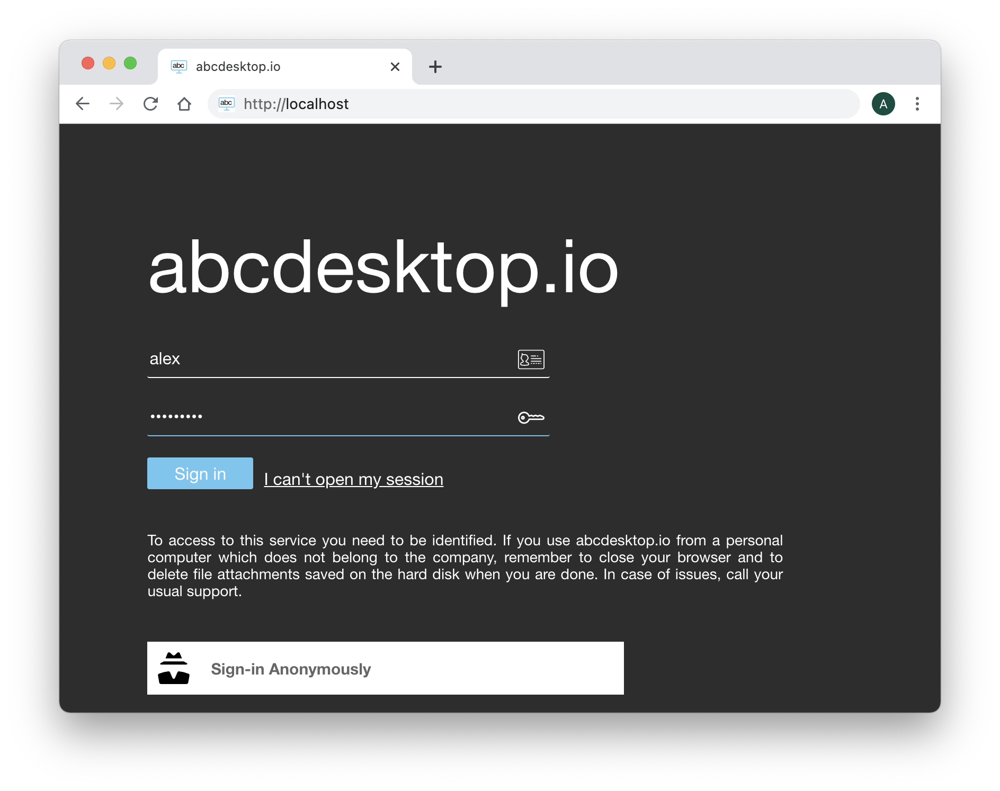
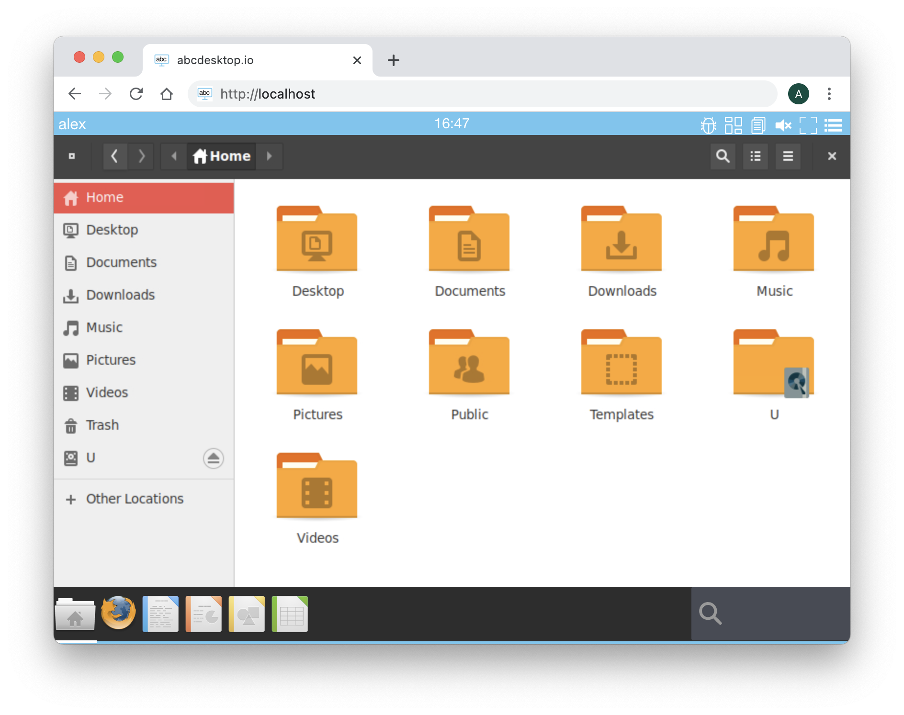
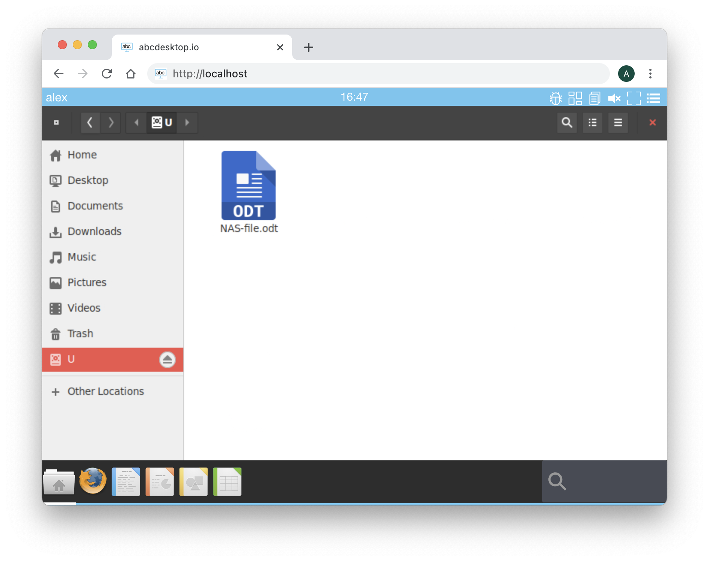

CIFS Flexvolume Plugin for Kubernetes
Driver for CIFS (SMB, Samba, Windows Share) network filesystems as Kubernetes volumes.
abcdesktop team is not the authors of the CIFS Flexvolume Plugin for kubernetes. This file is an update from the original source file https://raw.githubusercontent.com/fstab/cifs/. The original source code is https://github.com/fstab/cifs The author is Fabian Stäber. The update is part for abcdesktop.io
This article is just an update from Fabian Stäber work.
Background
Docker containers running in Kubernetes have an ephemeral file system: Once a container is terminated, all files are gone. In order to store persistent data in Kubernetes, you need to mount a Persistent Volume into your container. Kubernetes has built-in support for network filesystems found in the most common cloud providers, like Amazon's EBS, Microsoft's Azure disk, etc. However, some cloud hosting services, like the Hetzner cloud, provide network storage using the CIFS (SMB, Samba, Windows Share) protocol, which is not natively supported in Kubernetes.
Fortunately, Kubernetes provides Flexvolume, which is a plugin mechanism enabling users to write their own drivers. There are a few flexvolume drivers for CIFS out there, but for different reasons none of them seemed to work for me. So Fabian Stäber wrote this driver.
Installing
The flexvolume plugin is a single shell script named cifs. This shell script must be available on the Kubernetes master and on each of the Kubernetes nodes. By default, Kubernetes searches for third party volume plugins in /usr/libexec/kubernetes/kubelet-plugins/volume/exec/.
The plugin directory can be configured with the kubelet's --volume-plugin-dir parameter, run ps aux | grep kubelet to learn the location of the plugin directory on your system (see [#1][9]). The cifs script must be located in a subdirectory named abcdesktop~cifs/. The directory name abcdesktop~cifs/ will be mapped to the Flexvolume driver name abcdesktop/cifs.
On the Kubernetes master and on each Kubernetes node run the following commands:
VOLUME_PLUGIN_DIR="/usr/libexec/kubernetes/kubelet-plugins/volume/exec"
mkdir -p "$VOLUME_PLUGIN_DIR/abcdesktop~cifs"
cd "$VOLUME_PLUGIN_DIR/abcdesktop~cifs"
curl -L -O https://raw.githubusercontent.com/abcdesktop/cifs/main/cifs
chmod 755 cifs
The cifs script requires a few executables to be available on each host system:
mount.cifs, on Ubuntu this is in the cifs-utils package.jq, on Ubuntu this is in the jq package.mountpoint, on Ubuntu this is in the util-linux package.base64, on Ubuntu this is in the coreutils package.
apt-get install cifs-utils jq util-linux coreutils
To check if the installation was successful, run the following command:
VOLUME_PLUGIN_DIR="/usr/libexec/kubernetes/kubelet-plugins/volume/exec"
$VOLUME_PLUGIN_DIR/abcdestkop~cifs/cifs init
It should output a JSON string containing "status": "Success". This command is also run by Kubernetes itself when the cifs plugin is detected on the file system.
Update your od.config file
In this example, we use a Microsoft Active Directory as a LDAP Server.
CIFS is supported with kubernetes configuration, CIFS is not supported in docker non-cluster mode
Add a new policy to add a label TAG during the user's authentification process.
# Add an explicit authmanagers
authmanagers: {
'explicit': {
'show_domains': True,
'default_domain': 'AD',
'providers': {
'AD': {
'config_ref': 'adconfig',
'enabled': True
}
}
}
}
# add the configuration reference for adconfig
adconfig : { 'AD': { 'default' : True,
'ldap_timeout' : 15,
'ldap_protocol' : 'ldap',
'ldap_basedn' : 'DC=ad,DC=domain,DC=local',
'ldap_fqdn' : '_ldap._tcp.ad.domain.local',
'domain' : 'AD',
'domain_fqdn' : 'AD.DOMAIN.LOCAL',
'servers' : [ '192.168.7.12' ],
'kerberos_realm': 'AD.DOMAIN.LOCAL',
'policies' : { 'acls': None,
'rules' : { 'rule-domainuser' : {
'conditions' : [ { 'primarygroupid': '513', 'expected' : True } ],
'expected' : True,
'label' : 'domainuser' }
} } } } } } }
In this example :
- To verify that a user is member of
DOMAIN USERgroup, we check that the user'sprimaryGroupIDis equal to513 - If the
primaryGroupIDis equal to513the authentification process add the labeldomainuser
Then in the same od.config file, add rules to the desktop object to match this label domainuser
desktop.policies: { 'rules': { 'volumes': { 'domainuser': { 'type': 'cifs', 'name': 'homedirectory', 'volumename': 'homedir' } } },
'acls' : {} }
In this example :
- If the user's label is equal
domainuser, then the user attributhomeDiris mounted to thehomeDirectoryby the CIFS flexvolume plugin.
Testing
Apply new configuration file
kubectl apply -f abcdesktop.yml
Open you abcdesktop website and fill the authentation form with your Microsoft Active Direcotry Service or Samba server credentials.

Run authentification on the Microsoft Active Direcotry Service or on your Samba server
Start the File Manager application. In this example, the homeDir is set to U:, the mount entry become the letter U.

Click on the homeDir to read the CIFS ressource data. In this example, the shared ressource //192.168.7.101/alex contains a file ```NAS-file.ods'

Troubleshooting
Logs files are stored in host directory /var/log/abcdesktop/cifs
# ls -la /var/log/abcdesktop/cifs
total 36
drwxr-xr-x 2 root root 4096 janv. 28 16:39 .
drwxr-xr-x 3 root root 4096 déc. 1 12:00 ..
-rw-r--r-- 1 root root 288 janv. 28 16:39 alex.log
-rw-r--r-- 1 root root 832 janv. 28 16:39 cifs.log
-rw-r--r-- 1 root root 1264 déc. 1 14:25 error.alex.json
-rw-r--r-- 1 root root 834 déc. 1 14:25 error.alex.log
-rw-r--r-- 1 root root 50 janv. 28 16:39 mount.counter
-rw-r--r-- 1 root root 44 déc. 22 12:20 umount.counter
Check the file sAMAccountName.log, cifs.log
If there is an error, look at the error.$sAMAccountName.json and
error.$sAMAccountName.log
Example
-rw-r--r-- 1 root root 1264 déc. 1 14:25 error.alex.json
-rw-r--r-- 1 root root 834 déc. 1 14:25 error.alex.log
Run mount command
mount
In this example :
192.168.7.101is the IP Address of the NAS server//192.168.7.101/alexis the shared ressourcealexis the sAMAccountName
# mount | grep 192.168.7.101
//192.168.7.101/alex on /var/lib/kubelet/pods/b7530cc0-6903-458a-a133-d8a8450e3af4/volumes/abcdesktop~cifs/flexvol-cifs-homedir-alex type cifs (rw,relatime,vers=1.0,cache=strict,username=alex,uid=4096,forceuid,gid=4096,forcegid,addr=192.168.7.101,soft,unix,posixpaths,serverino,mapposix,acl,rsize=1048576,wsize=1048576,bsize=1048576,echo_interval=60,actimeo=1)
Check that the kubernetes secrets exist
kubectl get secrets -n abcdesktop
NAME TYPE DATA AGE
abcdesktopjwtdesktoppayload Opaque 2 65d
abcdesktopjwtdesktopsigning Opaque 2 65d
abcdesktopjwtusersigning Opaque 2 65d
auth-cifs-alex-flexvol-cifs-homedir abcdesktop/cifs 4 10m
auth-ldif-alex abcdesktop/ldif 11 10m